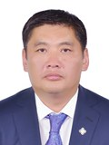

Member of the State Great Khural of Mongolia
Narankhuu Batsukh
Member of the State Great Khural of Mongolia NARANKHUU Batsukh
Democratic Party
Education, graduated schools, education degree:
1986 Secondary school, Dundgobi aimag
1989 School of intensive mathematics and physics studies, National University of Mongolia
Working experience:
1999 - 2012 General director, “Mon-Uran” LLC
2005 - 2012 General director, “Inveks” LLC
2008 - 2012 General director, “Dunjingarav”
2012 - 2016 Member of the State Great Hural (Parliament) of Mongolia
2016 Member of the State Great Hural (Parliament) of Mongolia
Awards:
2014 Order of “Polar Star”
Foreign language knowledge:
English;